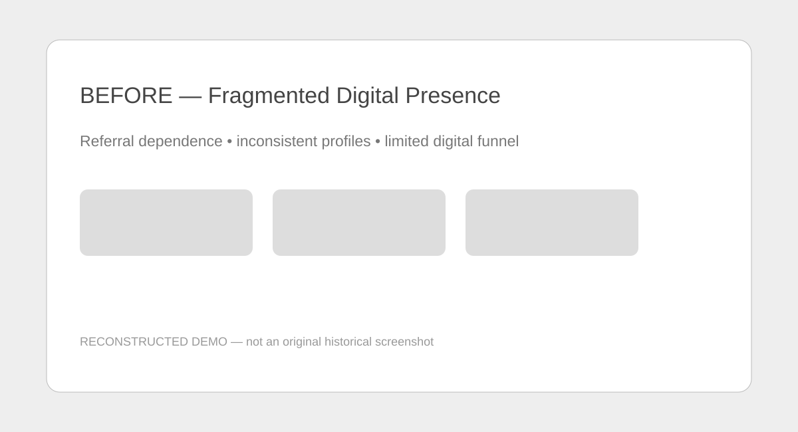
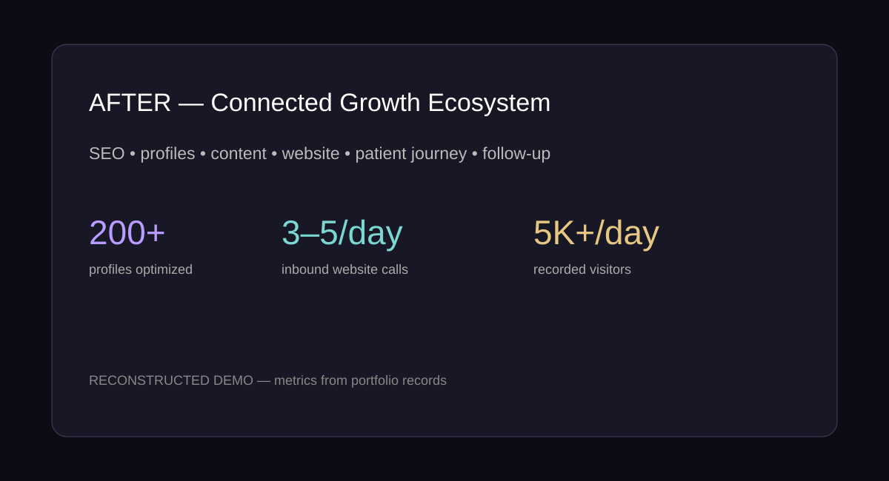
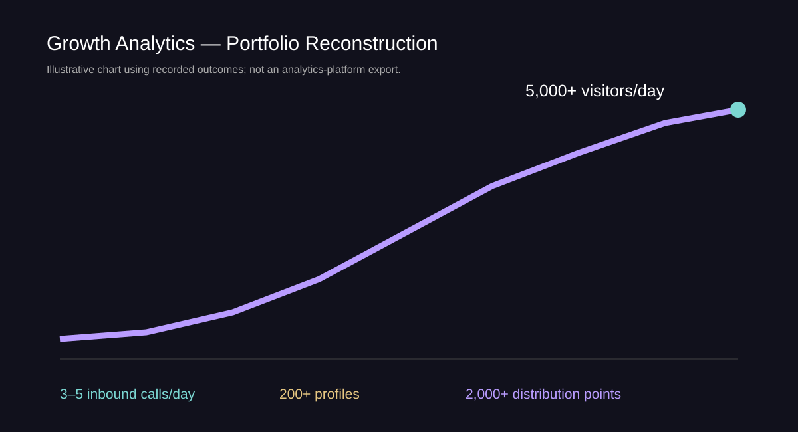

Web & Product
Responsive sites, conversion architecture, e-commerce, memberships, customer journeys, UX and ongoing site management.
Strategy and operations leader working where business strategy, technology, marketing and operations overlap — building the websites, acquisition systems, automations and operating infrastructure that turn attention into measurable outcomes.
Amber Patten is a Salt Lake City operator who has spent 10+ years across entrepreneurship, healthcare operations, retail, digital systems and AI-enabled workflows. She founded Awaken With Amber LLC in 2016, after beginning independent consulting in 2015, and most recently served as Executive Administrative Coordinator & Operations Lead at Functional Neurology & Sleep Medicine in Murray, Utah (2025–2026) — running patient communication, scheduling, intake, referrals and testing coordination end to end. Before that, as Front-End Manager at Native American Trading Post, she was promoted within six weeks.
She is also the builder. Trained as a computer scientist, she doesn't just run operations — she designs and ships the websites, e-commerce systems, automations and AI-enabled workflows underneath them. One person who has done the job and built the system: that combination is the practice.
She connects website, customer journey, marketing, automation and operations into one system, instead of selling isolated pieces.
Responsive sites, conversion architecture, e-commerce, memberships, customer journeys, UX and ongoing site management.
SEO, local discovery, content distribution, reputation, lead generation, conversion strategy and audience development.
LLM workflows, multi-agent systems, operational automation, CRM/email flows, structured prompts and process orchestration — governed by approval gates, not autopilot.
Scheduling, intake, referrals, customer and patient communication, documentation, workflow redesign and administrative systems — including writing the manual.
Platforms, tools and brands I have used in my own ventures and operations — listed for stack transparency, not as employers or clients.
Functional Neurology & Sleep Medicine — a newly opened, self-pay specialty neurology and sleep practice in Murray, Utah — had to grow without insurance referrals doing the work.
The work. Ran the practice's daily operations end-to-end — patient communication, scheduling, intake, referral coordination, specialty diagnostic testing (WatchPAT), laboratory workflows across LabCorp, Rupa Health, Vibrant Wellness, MyMycoLab and Evexia, and functional-medicine program support including the Bredesen Protocol — while redesigning the workflows underneath each of them.
The system. Connected the website, local SEO, 200+ directory and professional profiles, content distribution across 2,000+ channels, reputation, calls, scheduling, intake, testing and follow-up into one acquisition-and-operations system instead of isolated projects — and documented it in a full administrative training manual so the system survives any one person.
Builds for the practice. A Bredesen/ReCODE patient portal (caregiver mode, admin roster, content engine) and the practice's labs marketing site, shipped as production code repositories.
Outcome figures are as recorded in Amber's portfolio records and cover letter; the role, duties and hours are corroborated by Toggl Track time records and the practice's operational correspondence.



Every entry below is anchored to a record — a degree, a business filing, an archived website, a time-tracking system, or an employer's letter.
Dixie State University. The technical foundation under everything since: software, systems and business development trained together, not separately.
Websites, digital infrastructure, SEO, marketing and operations work for small organizations — the practice that later becomes Awaken With Amber LLC.
ConsultingSalt Lake City. Technology consulting, AI-enabled workflows, digital marketing, e-commerce, product development and operations — the umbrella for every venture that follows.
FounderFounder-operated beauty business; its website is preserved in the Wayback Machine through August 2018 and the business remains in directory listings today.
FounderRegenerative-community venture — resilient housing, renewable energy, agriculture, water and local enterprise. As CEO she circulated its business plan in 2021; the model now evolves as Awaken Eco-Villages.
Founder / CEOPromoted within six weeks. The owner's letter of recommendation (April 2025) credits her with tripling the store's daily income in her first three months.
Retail OperationsExecutive Administrative Coordinator & Operations Lead (2025–2026). The flagship engagement — see the case study above. Time records document the role contemporaneously from July 2025.
Healthcare OperationsAwakenAgain.com rebuilt and relaunched as a full e-commerce platform; BrandAlchemy product build (logo studio, brand advisor AI, prospect research) completed in three phases with full test coverage; St. Josephine Mines partnership and MVNO venture planning underway.
Product & PlatformsRoles are stated exactly as the records support them. Concepts are labeled concepts; nothing here borrows a title the evidence doesn't hold.
Connected commerce and content ecosystem: 45-product catalog, custom product builders, the Living Grimoire membership, guided customer journeys, checkout, SEO and automation.
Visit site ↗Patient operations plus direct-to-patient growth infrastructure: web, SEO, profiles, content, reputation, referrals, specialty testing and workflows.
Visit practice ↗Cross-functional consulting across web development, AI workflows, marketing, e-commerce, customer experience, operations and product development.
Regenerative-community model combining resilient housing, renewable energy, water conservation, agriculture, wellness, education and local enterprise. Now evolving as Awaken Eco-Villages.
Project administration, tour marketing, participant communications, historical storytelling, audience development and business-development support, under a signed lease partnership.
Systems concept for reconciling benign identity-data differences while preserving privacy, KYC/AML, fraud-prevention and audit requirements. Labeled a concept — designed, not deployed.
From her own GitHub, Replit and Vercel account records, 2025–2026. Six successive generations of one flagship site, iterated in public version history.
Most owners don't have a traffic problem — they have a systems problem, in one of six places.
Your Google profile says one phone number, Yelp says another, and your hours are different on every directory. Customers call the wrong number — or don't call at all.
What I do: audit every listing and correct them all to one accurate name, address, phone number and hours.
People land on your site, look around, and leave. There is no clear next step — no call to make, no booking to grab, no reason to stay.
What I do: rebuild the path from first click to contact, with clear offers and clear next steps.
Scheduling, intake, follow-ups and paperwork are done by hand, over and over — eating the hours you should be spending on customers.
What I do: document the process once, then automate the repeatable parts, with approval gates — not autopilot.
Reviews show up when they show up. Nobody asks for them, nobody answers them, and the same complaints keep coming back.
What I do: install a simple routine for asking, responding and learning from reviews, so reputation is managed — not accidental.
Your website, inbox, calendar and records are islands. Information gets re-typed, lost, or stuck in one person's phone.
What I do: connect the tools into one flow, so information entered once is available everywhere it is needed.
If one person is out, everything stops — because how things are done was never written down anywhere.
What I do: write the manual — documented processes your team can follow, so the business runs the same with or without any one person.
Based in Salt Lake City, Utah — serving local businesses in person and clients anywhere virtually.
In person locally, virtually from anywhere — and every engagement starts the same way.
Video or phone — for consulting, builds and ongoing work.
On-site walkthroughs, operations work and local engagements — seeing the operation in person before anything is quoted.
Engagements are scheduled by appointment — reach out through the contact form or LinkedIn and she replies personally.
She has run the front desk, the register and the closing shift — so the systems she designs are designed by someone who has done the job.
Strategy, web, marketing, automation and operations, coordinated inside one engagement instead of split across separate vendors who never talk to each other.
Time-tracked hours, version history, filings and an employer's letter stand behind the claims on this page — and the records are available to serious inquiries.
Every system is documented and handed over with a manual, so it keeps working without her.
Personal endorsements appear only when the source actually names and evaluates Amber's work. Organizational reputation is labeled as exactly that — never dressed up as a personal endorsement.
Need more than a website? I connect the site, the customer journey, the automation, the marketing and the operations into one system. Available for consulting engagements — and open to the right in-house role. Describe the bottleneck, the project, or the growth target.
Salt Lake City, Utah · Awaken With Amber LLC
Amber@awakenagain.com
LinkedIn — /in/awakenwithamber
Prefer to meet? Virtual meetings anywhere; in-person in the Salt Lake City area.